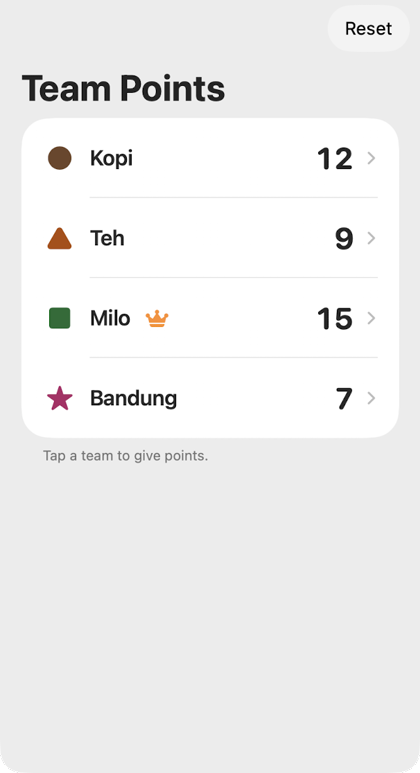
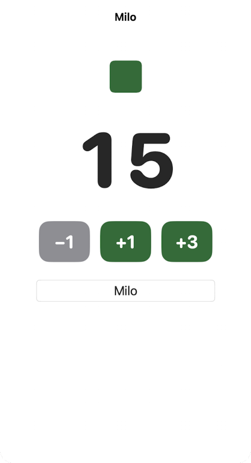
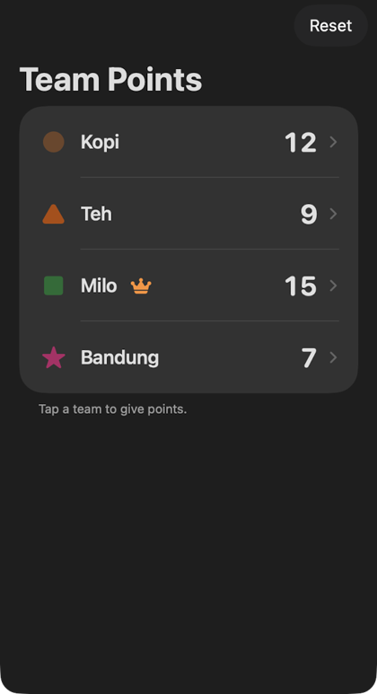
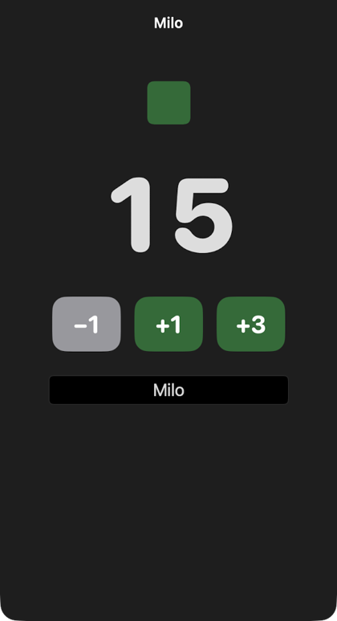

README: Team Points
A scoreboard for class quiz games, for iPad and iPhone. This page is the README from the Playgrounds file, with screenshots. You can also get it as plain text: README.md.




These screenshots come from the Swift code in the Playgrounds file. It was built and run as a Mac app, in a phone-sized window. The scores are made up.
What it does
- Screen 1 lists four teams and their scores. The leading team gets a crown.
- Tap a team to open screen 2. Give +1, +3 or take away 1 point.
- The big number rolls to the new score and pops a little.
- Rename a team on screen 2. The list updates too.
- Reset sets every score back to 0. It asks first.
What you need
- An iPad or Mac with Swift Playgrounds.
- iPadOS 17 or later, because the app uses
.numericText(value:).
How to open it
- Download TeamPoints.swiftpm.zip.
- Unzip it in the Files app. You get
Team Points.swiftpm. - Tap it. It opens in Swift Playgrounds.
- Tap the play button to run the app.
How to use it in a lesson
- Mirror the iPad to the projector before the quiz starts.
- Rename the teams if you like. Tap a team, then type in the name box.
- After each question, tap the winning team and give points. Tap Back to show the list.
- At the end, the crown shows the winner. Press Reset for the next class.
The files
TeamPointsApp.swift: where the app starts.Team.swift: one team, and the four starter teams.TeamsView.swift: screen 1. The scores live here, in@State.TeamView.swift: screen 2. It gets the team as a@Binding.Package.swift: made by Swift Playgrounds. Do not edit it by hand.
Accessibility
- Each team has a colour and a shape: circle, triangle, square, star.
- VoiceOver reads each row as one line, like "Milo, 15 points, in the lead".
- The point buttons say "Add 1 point", not "plus one".
- Buttons are 80 by 64 points. Apple's default control size is 44 by 44.
- Text uses system text styles, so it grows with the text size setting.
- With Reduce Motion on, the score changes with no animation.
Known problems
- Scores are lost when the app is closed fully. They only live in memory.
- In dark mode the team shapes are hard to see on the dark rows.
- The big score is a fixed 120 points. It does not grow with text size.